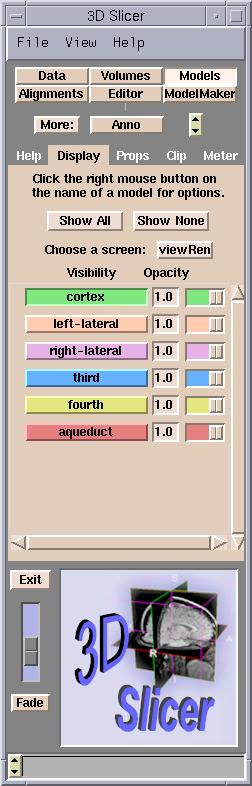

The Display tab of the Models panel controls which models
are visible in Slicer.

- Click Show All to display all models in the 3D Viewer.
- Click Show None to display none of the models in the 3D Viewer.
- Clicking the name of a model in the list turns its visibility on and
off.
- Right-clicking the name of a model in the list displays a menu of display
options for that model.